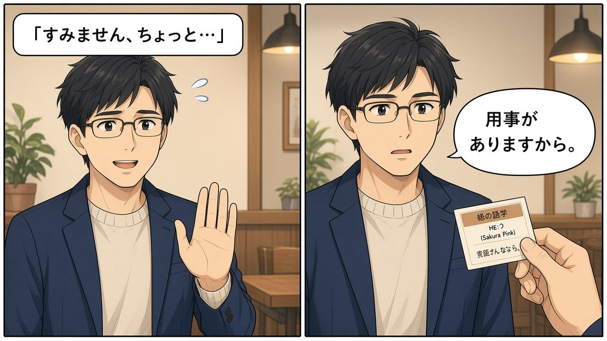
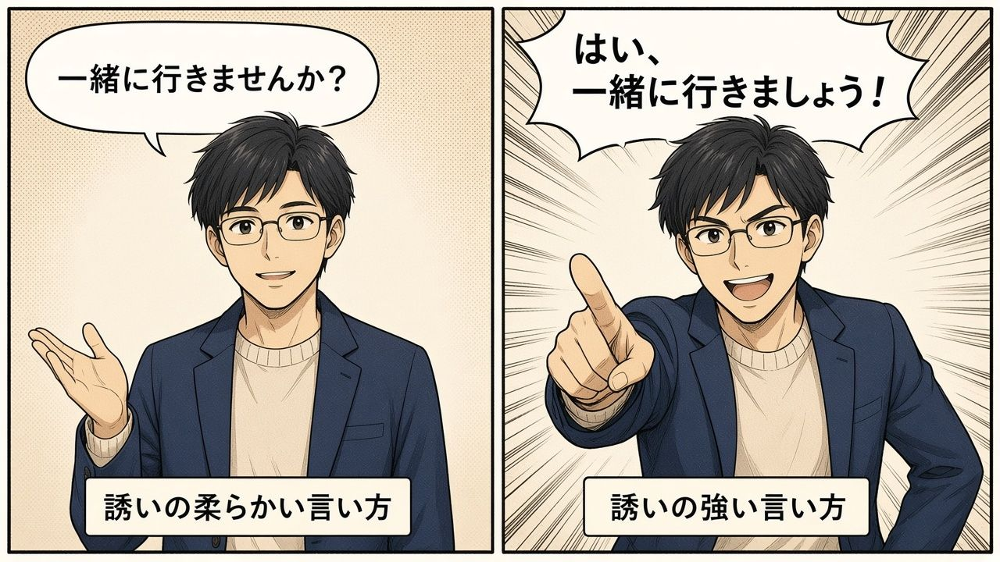
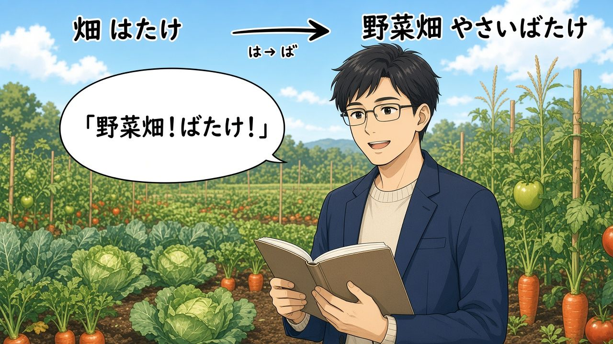

10/30 「一緒に行きませんか」誘う・断る
今天辛苦了！一句話重點：溫柔邀請用 一緒に〜ませんか；答應後說 いいですね。〜ましょう；婉拒用 すみません、ちょっと…／用事・約束・アルバイトがありますから → 残念です／また今度。活動用 〔場所〕で〔イベント〕があります（和「物がある」的 に 分開）。時間：有數字／特別日 → に；今日・来週・毎日 → 不加に。漢字：畑連濁（野菜ばたけ）、都会／田舎／里、石／岩。
📖 漫畫版上線｜12 頁日漫把今天整課講完（畑連濁、ませんか／ましょう、断り、でイベント、に／で、時間のに…）
主角ハルト（神樂坂語言學校新生・虛構）× ミキ先生。每頁圖下有 ▶ 播放／⧉ 複製／日語／羅馬拼音／中文。
打開完整漫畫版 →
從 P01 開始
漫畫複習：主角學會邀請與婉拒
📖 想看完整 12 頁日漫？請打開
漫畫版專頁。下面保留 6 格速覽漫畫。
主角是剛搬到東京・神樂坂附近、來語言學校讀書的約 37 歲男性（頁面上只叫「ハルト／主角」，不是任何人的肖像）。氣泡字若糊掉，請看圖下日語列。
① 邀請：一起去看電影嗎？
晚上在澀谷附近，ハルト用溫柔的「ませんか」邀請。
一緒に映画を見に行きませんか。 | issho ni eiga o mi ni ikimasen ka. | 要不要一起去看電影？ | say=いっしょにえいがをみにいきませんか。
生活中怎麼用：ます詞幹＋に行きませんか。EN: Won't you go see a movie with me? 泰: ไปดูหนังด้วยกันไหม。
② 婉拒：不好意思，有點……因為有事

軟拒開頭＋理由（〜がありますから）。
すみません、ちょっと…。 | sumimasen, chotto... | 不好意思，有點……。
用事がありますから。 | youji ga arimasu kara. | 因為有事。 | say=ようじがありますから。
生活中怎麼用：先說 ちょっと…，再補 用事／約束／アルバイトがありますから。
③ 橫濱有煙火：場所でイベント
活動／煙火用「場所であります」。
横浜で花火があります。 | yokohama de hanabi ga arimasu. | 橫濱有煙火。 | say=よこはまではなびがあります。
一緒に見に行きませんか。 | issho ni mi ni ikimasen ka. | 要不要一起去看？ | say=いっしょにみにいきませんか。
生活中怎麼用：物の存在＝に；イベント＝で。EN: There are fireworks in/at Yokohama (event).
④ ませんか vs ましょう

ませんか＝軟邀請（好婉拒）；ましょう＝Let's go（較難用ちょっと拒）。
行きませんか。 | ikimasen ka. | 要不要去？（邀請）
行きましょう。 | ikimashou. | 我們去吧。 | say=いきましょう。
⑤ 畑連濁：野菜ばたけ

單獨讀 はたけ；複合詞後項變濁音 → ばたけ。
畑 | hatake | 田地 | say=はたけ
野菜畑 | yasai batake | 菜圃（連濁） | say=やさいばたけ
⑥ 結束：残念です／また今度
婉拒後的收尾用語。
残念です。 | zannen desu. | 真遺憾。 | sp=ハルト;say=ざんねんです。
また今度！ | mata kondo! | 下次再約！ | sp=ミキ;say=またこんど
今天的漢字：畑・都会・里・石・岩
畑是國字（無音讀）。複合詞連濁：野菜ばたけ、ラベンダーばたけ。大きい石＝岩。
| 漢字 | 讀音 | 羅馬拼音 | 備註 |
|---|
| 畑 | はたけ | hatake | 國字・無音讀 |
| 野菜畑 | やさいばたけ | yasaibatake | 連濁 は→ば |
| 都会 | とかい | tokai | 都會 |
| 田舎 | いなか | inaka | 鄉下 |
| 里 | さと | sato | 村落 |
| 石 | いし | ishi | 石頭 |
| 岩 | いわ | iwa | 岩石＝大石 |
畑で野菜を作ります。 | hatake de yasai o tsukurimasu. | 在田裡種菜。 | say=はたけでやさいをつくります。
都会と田舎 | tokai to inaka | 都會和鄉下 | say=とかいといなか
大きい石が岩です。 | ookii ishi ga iwa desu. | 大石頭就是岩石。 | say=おおきいいしがいわです。
記法
- 粵連濁＝後面個音變濁（は→ば）；畑＝火田。
- 普野菜畑＝菜地；岩＝山上大石頭。
- ENrendaku＝compound voicing；stone→rock when big。
- 泰はたけ＝ไร่；ばたけ ในคำประสม。
今天的單字（語彙リスト）
こんしゅう | 今週 | konshuu | 這個星期
らいしゅう | 来週 | raishuu | 下個星期
せんしゅう | 先週 | senshuu | 上個星期
こんげつ | 今月 | kongetsu | 這個月
らいげつ | 来月 | raigetsu | 下個月
おととい | 一昨日 | ototoi | 前天
あさって | 明後日 | asatte | 後天
からおけ | カラオケ | karaoke | 卡拉 OK
こんさーと | コンサート | konsa-to | 演唱會
しあい | 試合 | shiai | 比賽
せーる | セール | se-ru | 特賣
ちけっと | チケット | chiketto | 票
ちず | 地図 | chizu | 地圖
どらいぶ | ドライブ | doraibu | 開車兜風
みずぎ | 水着 | mizugi | 泳裝
やきゅう | 野球 | yakyuu | 棒球
やくそく | 約束 | yakusoku | 約定
ようじ | 用事 | youji | 事情
ざんねん | 残念 | zannen | 遺憾
はなび | 花火 | hanabi | 煙火
まつり | 祭り | matsuri | 祭典
いべんと | イベント | ibento | 活動
あるばいと | アルバイト | arubaito | 打工
ひま | 暇 | hima | 有空
いそがしい | 忙しい | isogashii | 忙
〜ませんか（邀請）vs 〜ましょう
〜ませんか＝溫柔邀請（Won't you…?／ไปด้วยกันไหม）。〜ましょう＝Let's…（較像一起出發）。老師：行きましょう 較難用「すみません、ちょっと」婉拒；行きませんか 比較好拒。
一緒にご飯を食べに行きませんか。 | issho ni gohan o tabe ni ikimasen ka. | 要不要一起去吃飯？ | sp=A;say=いっしょにごはんをたべにいきませんか。
いいですね。食べに行きましょう。 | ii desu ne. tabe ni ikimashou. | 好啊。我們去吃吧。 | sp=B;say=いいですね。たべにいきましょう。
今週の金曜日、一緒に映画を見に行きませんか。 | konshuu no kin'youbi, issho ni eiga o mi ni ikimasen ka. | 這個星期五要不要一起去看電影？ | say=こんしゅうのきんようび、いっしょにえいがをみにいきませんか。
接在昨天的目的句：食べに行きませんか／見に行きませんか／聞きに行きませんか。
断り方（婉拒）
すみません、ちょっと…。 | sumimasen, chotto... | 不好意思，有點……。
用事がありますから。 | youji ga arimasu kara. | 因為有事。 | say=ようじがありますから。
約束がありますから。 | yakusoku ga arimasu kara. | 因為有約。 | say=やくそくがありますから。
アルバイトがありますから。 | arubaito ga arimasu kara. | 因為要打工。 | say=アルバイトがありますから。
残念です。 | zannen desu. | 真遺憾。 | say=ざんねんです。
また今度。 | mata kondo. | 下次再約。 | say=またこんど。
水着がありませんから。 | mizugi ga arimasen kara. | 因為沒有泳裝。 | say=みずぎがありませんから。
〔場所〕で〔イベント〕があります
横浜で花火があります。 | yokohama de hanabi ga arimasu. | 橫濱有煙火。 | say=よこはまではなびがあります。
浅草でお祭りがあります。 | asakusa de omatsuri ga arimasu. | 淺草有祭典。 | say=あさくさでおまつりがあります。
代々木公園でトルコのイベントがあります。 | yoyogi kouen de toruko no ibento ga arimasu. | 代代木公園有土耳其活動。 | say=よよぎこうえんでトルコのイベントがあります。
一緒に見に行きませんか。 | issho ni mi ni ikimasen ka. | 要不要一起去看？ | say=いっしょにみにいきませんか。
チケットが2枚あります。一緒に聞きに行きませんか。 | chiketto ga nimai arimasu. issho ni kiki ni ikimasen ka. | 有兩張票。要不要一起去聽？ | say=チケットがにまいあります。いっしょにききにいきませんか。
課堂真實情報：2026/10/31 代々木公園でトルコフェスティバル（渋谷／原宿附近）。
に vs で（あります）
| ○ 句子 | 助詞 | 說明 |
|---|
| 私の町に公園があります。 | に | 物／設施「存在」 |
| 横浜で花火があります。 | で | 活動／事件「舉行」 |
時間助詞「に」
- 要加に：有數字（2026年に、7時に、2月9日に）；特別日子（誕生日に、クリスマスに）。
- 不加に：今日・明日・昨日・一昨日・明後日；今週・来週；朝・昼・夜；毎日・毎週。
- 可加可不加：曜日（日曜日／日曜日に）；季節（春／春に）。
2026年に日本へ来ました。 | nisen nijuuroku nen ni nihon e kimashita. | 2026 年來了日本。 | say=にせんにじゅうろくねんににほんへきました。
朝、学校に行きます。 | asa, gakkou ni ikimasu. | 早上上學校。（朝不加に） | say=あさ、がっこうにいきます。
日曜日にデートします。／日曜日、デートします。 | nichiyoubi ni de-to o shimasu. | 星期天約會。（両可） | say=にちようびにデートをします。
誘う對話例（角色 A／B）
ビールを飲みたいです。飲みに行きませんか。 | bi-ru o nomitai desu. nomi ni ikimasen ka. | 想喝啤酒。要不要去喝？ | sp=A;say=ビールをのみたいです。のみにいきませんか。
いいですね。 | ii desu ne. | 好啊。 | sp=B
今晩一緒に行きませんか。 | konban issho ni ikimasen ka. | 今晚一起去嗎？ | sp=A;say=こんばんいっしょにいきませんか。
すみません、アルバイトがありますから。 | sumimasen, arubaito ga arimasu kara. | 抱歉，因為要打工。 | sp=B;say=すみません、アルバイトがありますから。
明日の夜は友だちと約束がありますから。 | ashita no yoru wa tomodachi to yakusoku ga arimasu kara. | 明天晚上和朋友有約。 | say=あしたのよるはともだちとやくそくがありますから。
易錯點
✗ 映画に行きませんか✓ 映画を見に行きませんかeiga o mi ni ikimasen ka
✗ 横浜に花火があります✓ 横浜で花火がありますyokohama de hanabi ga arimasu
✗ 朝に学校に行きます✓ 朝、学校に行きますasa, gakkou ni ikimasu
✗ 毎日に行きます✓ 毎日行きますmainichi ikimasu
✗ 野菜はたけ✓ 野菜ばたけyasaibatake
連濁
行きましょう＋ちょっと拒（難）✓ 行きませんか 較好婉拒ikimasen ka
我自己的句子（只給句框）
老師禁止用 AI 代寫作文。請依自己的真實計畫填空。
- ＿＿、一緒に＿＿に行きませんか。
- いいですね。＿＿ましょう。
- すみません、ちょっと…。＿＿がありますから。
- ＿＿で＿＿があります。一緒に行きませんか。
- チケットが＿＿枚あります。一緒に＿＿に行きませんか。
- 残念です。また今度。
總考試 20 題（三條命）
有 🔊 的是聽力題。三條命用完就結束，最後列出錯題，可以一鍵複製。
今天的重點・作業・15 分鐘
📌 今天的重點
- ませんか（邀請）／ましょう（一起做）；断り：ちょっと…＋〜がありますから。
- 〔場所〕でイベントがあります；に＝物存在／で＝活動。
- 時間のに：數字・特別日要；今日・来週・毎日不要；曜日・季節 optional。
- 畑連濁（ばたけ）；石／岩；都会・田舎・里。
⏰ 作業和明天的小考
- 課堂：文法ノート p.36 の1番（多半已當堂完成；結束「宿題が終わったので終わり」）。
- 用過：別冊約 p.21–22、教科書約 p.104–105、文法ノート p.36–37。
- 未錄到明確的 11/2（月）小テスト範圍；例句「月曜日テスト」屬誘う練習。
- 建議自習：誘う／断る對話各 5 組。
⏱ 15 分鐘複習法
- 0–5 分：語彙リスト＋ませんか／ましょう 各念 5 句。
- 5–10 分：🎧 跟讀漫畫邀請／婉拒。
- 10–15 分：小遊戲＋自己寫 3 組邀請／1 組婉拒。